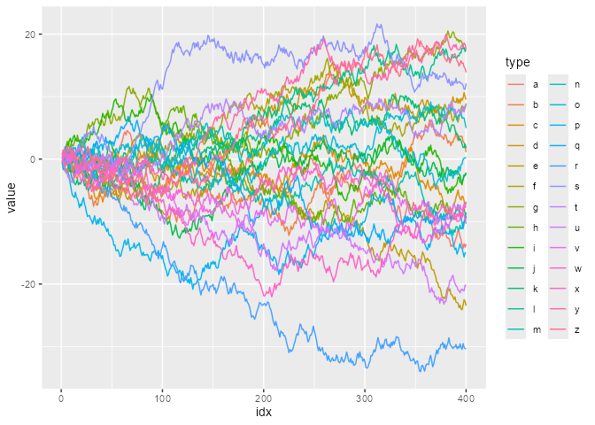

Highlight geoms in ggplot2.
Installation
install.packages("gghighlight") # Or the development version from GitHub: # install.packages("devtools") devtools::install_github("yutannihilation/gghighlight")
Example
Suppose we have a data that has so many series that it is hard to identify them by their colours as the differences are so subtle.

With gghighlight(), we can highlight the lines whose max values are larger than 20:
library(gghighlight) p <- ggplot(d) + geom_line(aes(idx, value, colour = type)) + gghighlight(max(value) > 19) #> label_key: type p

The result is an usual ggplot object, so it is fully customizable. For example, it can be used with custom themes and facets.
p + theme_minimal()

p + theme_minimal() + facet_wrap(~ type)

gghighlight() can highlight almost any geoms. For more details, please read Introduction to gghighlight.